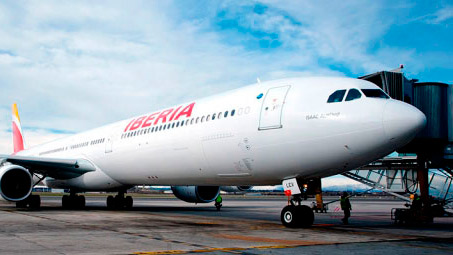
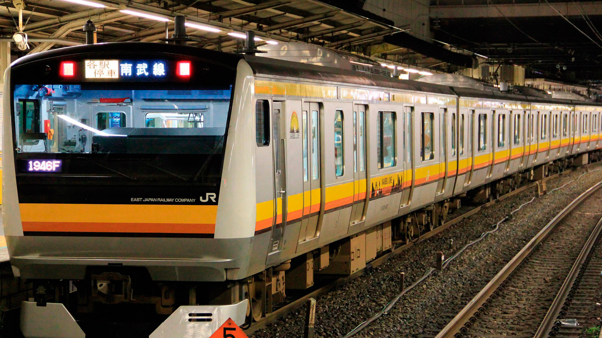
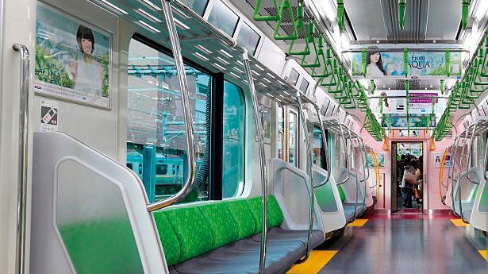
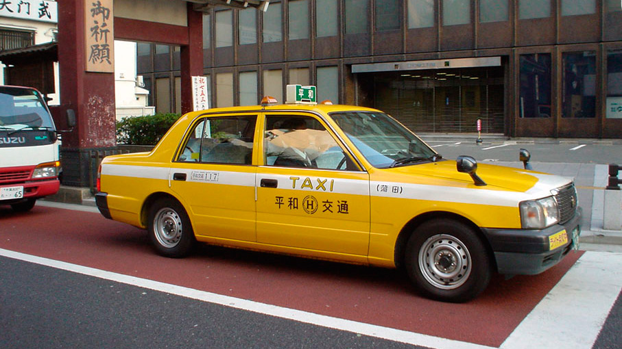

Tòquio
Tòquio és la capital japonesa, està dividida en dues àrees principals: la continental i la insular. L'àrea continental està localitzada en el marge nord-oest de la badia de Tòquio i està enclavada al centre-oest de l'illa de Profund o Honshu, formant part de la regió de Kanto.
Curiositats
1) Els japonesos són extremadament silenciosos.
2) Sens dubte un dels grans contrastos que s'aprecien a Tòquio (i en tot Japó) són les lleis respecte al tabac.
3) Són extremadament ordenats.
4) Hi ha bars amb lloguers de gossos i gats.
5) En Japó la cosmètica és un punt fort, per això les japoneses van molt arreglades.
6) Els banys japonesos incorporen lectors de targeta i fins i tot pantalles per poder escoltar la teva pròpia música o veure fotografies.
7) Al contrari que en altres països, els rodamons japonesos viuen al carrer però no demanen diners i són totalment pacífics.
8) Japó és el país de les màquines expenedores. I el preu dels articles sempre és el mateix.
Com arribar a Tòquio
Aeroport:

Actualment l'única companyia aèria que realitza vols directes entre Espanya i Japó és Iberia, que vola entre Madrid i Tòquio 3 vegades per setmana. Si sortiu des d'una altra ciutat o voleu volar al millor preu, a vegades, la millor opció per viatjar al país del sol naixent, és fer escala en grans ciutats com Londres, París, Dubai o Frankfurt.
Mentre que Tòquio compta amb dos aeroports internacionals: Narita i Haneda. La majoria dels vols arribats des d'Europa aterren en Narita. Haneda té més rutes amb altres països asiàtics.
Tren:

Si aneu a visitar altres ciutats de Japó abans de visitar Tòquio, és més comú arribar a Tòquio amb tren. Des d'Osaka i Kyoto surten trens bela (Shinkansen) cada 20 minuts. El trajecte dura aproximadament dues hores i mitja.
Els apassionats dels trens que vulguin gaudir d'una llarga estada en un vagó poden agafar la transsiberiana a Moscou i arribar fins a diversos punts on prendre un ferri a Japó.
Vaixell:

Per cost i temps, aquest mètode no és molt recomanable però hi ha diverses línies marítimes entre Japó, Corea i Xina.
Transports de la ciutat
Metro

El metro és el mitjà de transport de Tòquio per excel·lència. Encara que en alguns aspectes s'ha quedat antiquat, la qualitat del servei és excel·lent. A més que és la forma més ràpida d'arribar d'un lloc a altre. La puntualitat i la freqüència dels trens és un exemple a seguir. Actualment té 13 línies, i el preu del bitllet varia en funció de la distància que vols recórrer. Podeu anar a un hotel a comprar bitllets per als transports públics.
PREUS
D'1 a 6 km: 160 iens.
De 12 a 19 km: 230 iens.
De 20 a 27 km: 270 iens.
De 28 a 40 km: 300 iens.
Bitllet diari de Tòquio Metro: 710 iens.
Bitllet diari de Toei: 700 iens.
Bitllet diari per a les dues xarxes de metro: 1000 iens.
Adquirint els bitllets senzills de 10 en 10 s'obté un bitllet addicional. Els nens tenen un descompte del 50% en totes les tarifes.
Línia Yamanote

Juntament amb el metro, la línia de tren Yamanote comunica de forma ràpida les principals zones d'interès de Tòquio. Cada dia més de 3,5 milions de persones utilitzen aquesta línia, ja que és la línia de tren més important. És una línia circular de tren elevat, operada per la companyia Japan Rall. El cost d'un trajecte oscil·la entre 150 i 260 iens, sent la tarifa més habitual la de 160 iens.
Com comprar un bitllet senzill?
Si voleu comprar bitllets senzills, heu de buscar la vostra destinació final en els plànols de l'estació. Al costat del nom de cada estació veureu el preu del trajecte. En les màquines automàtiques haureu de prémer la tecla d'aquest valor i introduir els diners.
Per comoditat, si estareu diversos dies a Tòquio, el millor és adquirir una targeta Suica o Pasmo.
Targeta Suica/Pasmo

Encara que al principi ambdues targetes eren independents (Suica de Japan Rail i Pasmo d'altres companyies), actualment ambdues targetes són compatibles i es poden recarregar i utilitzar en els mateixos llocs.
Fora de Tòquio la targeta Suica és acceptada en més llocs, per la qual cosa és la millor opció per als viatgers que vagin a moure's per Japó.
A més de l'import que vulgueu precarregar, les targetes Suica i Pasmo tenen un cost inicial de 500 iens en concepte de dipòsit. Aquest import es retorna íntegrament en retornar la targeta en les oficines de Japan Rail (Suica) o d'altres companyies (Pasmo).
Si a l'hora de retornar la targeta teniu saldo sense utilitzar, també serà retornat una vegada descomptats 210 iens en concepte de gestió.
A més, aquestes targetes no serveixen només per al transport, també podeu pagar amb aquestes targetes en màquines expenedores, botigues i alguns restaurants propers a les estacions.
On es compra?
Podeu adquirir aquestes targetes en les oficines de Japan Rail (Suica) o en les d'altres companyies de trens (Pasmo).
Si arribeu a Tòquio amb avió i aterreu en Narita, la millor forma d'adquirir la targeta és acollint-se a l'oferta Suica & NEX. Per 3.500 iens obtindreu un bitllet d'anada en el Narita Express i una targeta Suica per valor de 2.000 iens
Autobús

Els autobusos a Tòquio són una alternativa al metro i a les línies de tren. Com a principal avantatge, ofereix la possibilitat d'anar veient l'ambient dels carrers
La major part dels autobusos urbans realitzen rutes que comuniquen estacions de tren, per la qual cosa el seu ús no és tan complicat com en principi podria semblar.
Com a punt negatiu està l'horari, ja que els últims autobusos circulen a les 10 de la nit.
El preu d'un bitllet senzill és de 200 iens. Els nens menors de 12 anys paguen el 50%. Els bebès menors d'un any viatgen gratis. I al contrari que en la resta del món, en els autobusos japonesos es paga a la sortida.
Si no teniu cap targeta de transport, haureu d'introduir monedes o un bitllet de mil iens en la ranura corresponent. La màquina lliura el canvi de forma automàtica.
Taxi

Encara que no són gens barats, a certes hores i para determinats trajectes els taxis són alguna cosa inevitable. Com a punt positiu, són còmodes i no enganyen.
Encara que a certes hores o per a trajectes curts siguin molt bona opció, els taxis japonesos es troben entre els més cars del món.
Cada companyia fixa els seus propis preus però finalment tots són iguals o molt similars. Aquests són els preus habituals:
Primers dos quilòmetres: 710 iens.
Cada 288 metres addicionals: 90 iens.
105 segons d'espera: 90 iens.
Parlant més clarament, un trajecte normal pel centre de Tòquio costa entre 7 i 15 euros. Quan està activada la tarifa nocturna aquests preus es veuen incrementats en un 20%.
Recorda
La millor forma d'agafar un taxi i no acabar donant voltes sense sentit intentant entendre's amb un taxista japonès és portar un mapa sempre a mà. Assenyalant la destinació en el mapa o portant aquest escrit en japonès evitareu possibles problemes amb l'idioma.
Un bon consell és agafar una targeta de l'hotel per si en algun moment necessiteu prendre un taxi per tornar a aquest.
I si la teva idea de viatge és no quedar-te solament a Tòquio i vols conèixer Japó, amb el Japan Rail Pass podràs viatjar amb tren de forma il·limitada.
Japan Rail Pass
El Japan Rail Pass és una targeta que permet l'ús il·limitat de les línies de tren JR de llarg a llarg de Japó. És un abonament imprescindible per als viatgers que no limitin el seu viatge a Tòquio.
A la zona de Tòquio, el Japan Rail Pass és especialment útil per arribar a l'Aeroport de Narita, per utilitzar els trens locals com la línia Yamanote i per visitar ciutats properes com Nikko, Kamakura i Yokohama.
L'única limitació que té la targeta és la de no poder utilitzar els trens Nozomi, els Shinkansen (trens bala) més nous.
El Japan Rail Pass només pot ser adquirit per estrangers i ha de ser adquirit a un altre país, ja que, per estrany que resulti, la targeta no es ven a Japó.
Pots comprar en alguna de les agències que operen per internet. Rebreu les targetes al vostre domicili en un màxim de 72 hores des de la compra. O si preferiu acudir a un punt físic, a Madrid i Barcelona trobareu diverses agències de viatges que ho ofereixen.